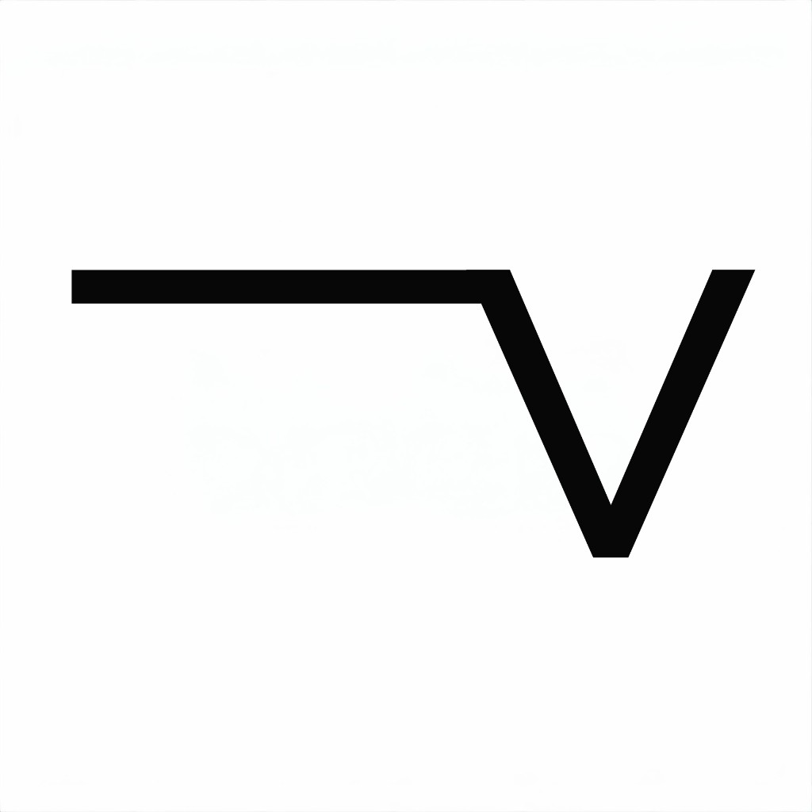

The Context Layer for Engineering Intelligence
Built for an autonomous future.
The Problem
Your AI already has access to the data it needs. The problem is the data itself: disconnected, conflicting, stale, permission-fragmented, and semantically weak. That isn't a model problem. It's a context problem.
Requirements live in one tool, decisions in chat, code in another, tests in a third, telemetry in a data lake. None of it speaks the same language.
LLMs see strings of text. They don't see joints, sensors, control loops, interfaces, or safety constraints. Without typed engineering meaning, reasoning hallucinates.
When an engineer leaves, the rationale walks out with them. The same decisions get re-litigated. Tribal knowledge quietly evaporates from one release to the next.
"The moat in enterprise AI isn't the model. It's the context." — Luvian thesis
Market Opportunity
TAM (2025)
$58–95B
Engineering intelligence ceiling: PLM + ALM + MBSE + industrial AI + KG + A&D digital engineering
SAM (2027)
$6–12B
Addressable to a typed, versioned, permission-aware engineering graph
SOM (Year 3)
$20–80M ARR
15–40 strategic accounts in A&D primes, defense tech, tier-1 auto/robotics
$26–37B
PLM (6.6–8.7% CAGR)
$6–25B
Industrial AI (17.9–19.5%)
$6.3B
A&D Digital Engineering (11.6%)
$3.5–5.6B
ALM / Requirements (7.4–10.7%)
$2.9B
Enterprise KG (21.3% CAGR)
Sources: Research and Markets, Mordor, DataIntelo, MarketGenics, 360iResearch, Grand View, DoD Comptroller. Full segment buildup in /market-eval-v2/.
The Solution
Luvian connects requirements, designs, code, tests, telemetry, and decisions into one continuously evolving knowledge graph — so AI reasoning, traceability, and engineering automation can finally be trusted.
Connectors into every system where engineering knowledge already lives — modelers, trackers, source, CI, PLM, test, simulation, telemetry.
A canonical engineering ontology with stable identity, lineage, ownership, and temporal state. Typed system meaning, not strings.
Beyond RAG. Permission-aware retrieval, graph traversal, temporal reasoning, contradiction detection, and confidence scoring.
Copilots, reviewers, and domain agents that earn trust because the substrate underneath them does.
Product
We started with the structured-artifact layer: a SysML v2-native modeler. It's the seed of the broader knowledge graph — a typed, collaborative, AI-assisted source of truth that the rest of the platform federates around.
Why Luvian Wins
A typed, versioned, permission-aware graph of every artifact, link, and decision across the product lifecycle. The substrate enterprise AI needs to be trustworthy in engineering.
Patent-pendingPermission-aware retrieval, graph traversal, temporal reasoning, contradiction detection, and confidence scoring. Reasoning over connected context, not just chunked retrieval.
Patent-pendingDecisions, rationale, and trade-offs become machine-readable and continuously evolving. People leave; the memory stays. Tribal knowledge becomes operational graph.
Audit-ready provenanceCommercial (cloud LLM) and government (local-only) profiles from a single codebase. The context graph and reasoning agents can run entirely behind your firewall — your engineering data never leaves.
Single codebase, dual profilesBusiness Model
| Tier | Target | Price / seat / yr | Key Includes |
|---|---|---|---|
| Team | Small teams (5–20) | $1,200 ($100/mo) | Modeling, requirements, real-time collab — your foundation in the graph |
| Professional | Mid-market (20–100) | $2,400 ($200/mo) | + Safety analysis, requirement quality, AI copilots, public API |
| Enterprise | Large programs (100+) | $3,600 ($300/mo) | + Connectors, on-prem, SSO/SAML, audit logs, SLA, dedicated support |
| Defense/Gov | DoD, air-gap (50+) | $5,400 ($450/mo) | + Air-gap reasoning, IL4/IL5 docs, FedRAMP artifacts, dedicated CSM |
70–75%
Subscription Revenue
15–20%
Professional Services
5–8%
AI Compute Add-On
2–5%
Platform / API
3–10x cheaper than incumbent MBSE suites (Cameo, DOORS, Jama). Premium positioning vs. point-tool AI plays — differentiation is the connected engineering context graph underneath.
Go-to-Market
Founder-led sales. 5 partners. Subsidized pricing for feedback + case studies.
First AE. Inbound from content + community. 19 customers. SOC 2.
Sales team. Channel partners (Booz Allen, SAIC). FedRAMP. 46 customers.
Full sales org. Defense enterprise. International. 131 customers.
Anywhere firmware, mechanical, perception, control, and safety have to integrate cleanly — and anywhere AI without trustworthy context is dangerous.
Competitive Landscape
| Capability | Luvian | Flow | Trace | Aras | Cameo | Glean | Palantir |
|---|---|---|---|---|---|---|---|
| Typed Engineering Ontology | ✓ | ~ | ~ | ~ | ✓ | ✗ | ~ |
| SysML v2 (post-Dec 2025) | ✓ | ✗ | ✗ | ✗ | ✓ | ✗ | ✗ |
| Requirements + Trace | ✓ | ✓ | ✓ | ✓ | ~ | ✗ | ~ |
| Safety Methods (HARA/TARA/STPA) | ✓ | ✗ | ✗ | ~ | ✗ | ✗ | ✗ |
| V&V / Verification Evidence | ✓ | ~ | ~ | ~ | ✗ | ✗ | ~ |
| Beyond-RAG Reasoning | ✓ | ~ | ~ | ~ | ✗ | ~ | ✓ |
| True Air-Gap (IL5/IL6) | ✓ | ✗ | ~ | ✓ | ✓ | ~ | ✓ |
Glean shipped on-prem via Dell (May 2025); Cameo shipped SysML v2 in 2026x (Dec 2025) — both partially close historical Luvian gaps. The remaining wedge: typed engineering ontology + safety methods + true offline air-gap, in one graph.
Only Luvian unifies SysML v2 modeling, safety methodology engines, requirements/V&V traceability, and beyond-RAG reasoning in one typed engineering graph — deployable on-prem and air-gapped. Detailed competitor profiles in market-eval-v2.
Defense & Government
Single docker compose up deploys the full context layer. Local-only embeddings (MiniLM, 80MB) and local LLM-backed reasoning. Zero data egress.
DO-178C, DO-254, ARP4754A/4761, ISO 26262, ISO 21434 wired into the ontology, safety analysis, and V&V workflows.
SOC 2 Type 1 post-seed. FedRAMP Li-SaaS Y3. IL4/IL5 path Y4. Classification-aware permissions, provenance, and audit trail on every graph edge.
$270K+
Min defense ACV (50 seats)
$5M+
Enterprise-wide deal potential
$15M+
Max defense ACV (500+ seats)
Team
Full-stack architect. Built the 3-layer rendering pipeline, ambient ML engine, and defense deployment architecture. Domain expertise in systems engineering tooling.
20-year veteran. Production hardening: CI/CD, security, observability, performance. Enterprise infrastructure at scale.
Product launch and market fit. Personas, GTM strategy, analytics, onboarding, and beta program execution.
3 today → 8 by end of Y1 · 17 by end of Y2
Financial Projections
| Base Case | Y1 | Y2 | Y3 | Y4 | Y5 |
|---|---|---|---|---|---|
| Revenue | $165K | $846K | $3.3M | $9.9M | $21.2M |
| Costs | $1.7M | $3.7M | $7.2M | $11.8M | $16.8M |
| Net Income | ($1.6M) | ($2.9M) | ($3.9M) | ($1.9M) | $4.4M |
| Customers | 5 | 19 | 46 | 85 | 131 |
Unit Economics
Benchmark: $300–500K for best-in-class SaaS
The Ask
24+ months runway to context layer GA and first $1M ARR.
4 eng (graph + ontology + connectors), 1 product, 1 SE, 1 sales, 1 ops. Hire the team that scales past the founder.
5 design partners in robotics & mechatronics. SOC 2 Type 1. First enterprise contracts. $100K+ ARR by month 12.
Define "engineering intelligence" before incumbents respond. File patents on context orchestration and semantic engineering graph. Build advisory board.
Seed (now)
$7–10M
PMF signal: 3+ paying, NPS > 40
Series A (Y2)
$20–30M
$1M+ ARR, 120%+ NRR
Series B (Y3–4)
$50–80M
$5M+ ARR, defense contracts
The context layer for engineering intelligence.
Built for an autonomous future.
Luvian Confidential — NDA Restrictions